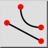
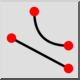
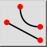
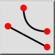

Fim
Barra de Ferramenta / Ícone:
 

Menu: Salto > Fim
Atalho: S, E
Comandos: snapend | se
Esta é uma tradução automática.
Barra de Ferramenta / Ícone:
 

Menu: Salto > Fim
Atalho: S, E
Comandos: snapend | se
Passa para pontos finais de linhas, arcos, segmentos de polilinhas, splines, elipses, arcos e pontos.